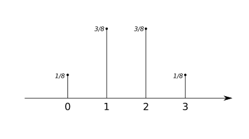

Tema 3: Variables Aleatorias
Variables aleatorias
Función que asocia a cada suceso elemental, un número real.
\[ X:\Omega\to \mathbb{R} \]
Ejemplo
Definimos la v.a. discreta \[X = \] "Número de caras obtenidas al lanzar 3 monedas."
- "No sacar ninguna cara" \[\Rightarrow 0 \]
- "Sacar una cara" \[\Rightarrow 1 \]
- "Sacar dos caras" \[\Rightarrow 2 \]
- "Sacar tres cara" \[\Rightarrow 3 \]
Tipos
- Discretas: P. ej. "número obtenido al lanzar un dado"
- Continuas: P. ej. "altura de una persona elegida al azar"
V.A. Discretas
Función de masa de probabilidad
Dada una variable aleatoria discreta \[X\]:
\[ f(x_i) = p_i = P(X=x_i) \]
Ejemplo
Definimos la v.a. discreta \[X = \] "Número de caras obtenidas al lanzar 3 monedas."
- \[ p_0 = f(0) = P(X=0) = 1/8 \]
- \[ p_1 = f(1) = P(X=1) = 3/8 \]
- \[ p_2 = f(2) = P(X=2) = 3/8 \]
- \[ p_3 = f(3) = P(X=3) = 1/8 \]
Gráfica
Propiedades
- \[f(x_i) \in [0, 1]\] (es una propiedad)
- \[ \sum_i f(x_i) = 1 \]
1Indica los valores de la función de masa de probabilidad de las siguientes variables aleatorias y traza su gráfica:
- a \[ X = \]"Número de cruces al lanzar 2 monedas"
- b \[ Y = \]"Suma de los números obtenidos al lanzar dos dados de 4 caras"
V.A. Discretas
Función de distribución
Dada una variable aleatoria discreta \[X\]:
\[ F(x_i) = P(X \le x_i) \]
Ejemplo
Definimos la v.a. discreta \[X = \] "Número de caras obtenidas al lanzar 3 monedas."
- \[ F(0) = P(X \le 0) = 1/8 \]
- \[ F(1) = P(X \le 1) = 4/8 \]
- \[ F(2) = P(X \le 2) = 7/8 \]
- \[ F(3) = P(X \le 3) = 8/8 = 1 \]
Propiedades
- \[ F(x) \in [0, 1] \]
- Función creciente
- \[ \lim_{x \to -\infty} F(x) = 0 \]
- \[ \lim_{x \to +\infty} F(x) = 1 \]
- \[ P(a \ge X \ge b) = F(b) - F(a) \]
2Indica los valores de la función de distribución de las siguientes variables aleatorias y traza su gráfica:
- a \[ X = \]"Número de cruces al lanzar 2 monedas"
- b \[ Y = \]"Suma de los números obtenidos al lanzar dos dados de 4 caras"
Parámetros de una v.a. discreta
Esperanza matemática o media
Nos aporta el "valor esperado" al realizar el experimente aleatorio.
\[ \mu_x = E[x] = \sum_i x_i \cdot f(x_i) \]
Ejemplo
Definimos la v.a. discreta \[X = \] "Número de caras obtenidas al lanzar 3 monedas."
\[E[X] = \sum_i x_i \cdot f(x_i) = 0 \cdot f(0) + 1 \cdot f(1) + 2 \cdot f(2) + \]
\[+ 3 \cdot f(3) = 0 \cdot \frac{1}{8} + 1 \cdot \frac{3}{8} + 2 \cdot \frac{3}{8} + 3 \cdot \frac{1}{8} = \]
\[ = \frac{0}{8} + \frac{3}{8} + \frac{6}{8} + \frac{3}{8} = \frac{12}{8} = 1'5\]
Parámetros de una v.a. discreta
Varianza
Nos aporta una medida de dispresión de los valores de la variable con respecto a la media.
\[\sigma_x^2 = VAR[X] = \sum_i (x_i - \mu)^2 \cdot f(x_i) = \]
\[= \sum_i x_i^2 \cdot f(x_i) - \mu^2 \]
\[VAR[X] = \sum_i x_i^2 \cdot f(x_i) - \mu^2 = \] \[ = 0^2 \cdot f(0) + 1^2 \cdot f(1) + 2^2 \cdot f(2) + 3^2 \cdot f(3)) - 1.5^2 =\] \[ = (0 \cdot \frac{1}{8} + 1 \cdot \frac{3}{8} + 4 \cdot \frac{3}{8} + 9 \cdot \frac{1}{8}) - 1.5^2 = \] \[ = (\frac{0}{8} + \frac{3}{8} + \frac{12}{8} + \frac{9}{8}) - 1.5^2 = \frac{24}{8} - 1.5^2 = 0.75\]
Parámetros de una v.a. discreta
Desviación típica
Nos aporta una medida de dispersión pero en las mismas unidades que la variable.
\[\sigma_x = \sqrt{\sigma_x^2} = \sqrt{VAR[X]}\]
\[ \sigma_x = \sqrt[\sigma_x^2] = \sqrt{0.75}= 0.86\]
3Calcula la media, varianza y desviación típica de las siguientes variables aleatorias:
- a \[ X = \]"Número de cruces al lanzar 2 monedas"
- b \[ Y = \]"Suma de los números obtenidos al lanzar dos dados de 4 caras"
4Definimos un experimento aleatorio como sigue:
En una bolsa tenemos 6 bolas: 3 bolas con un número 1 dibujado, 2 bolas con un número 2 dibujado y 1 bola con un número 3 dibujado. Sacamos dos bolas de la bolsa.
Definimos ahora la variable aleatoria \[Z=\]"suma de los número de las dos bolas".
Calcula los valores de las funciones de masa de probabilidad y la de distribución, traza sus gráficas y calcula la media, varianza y desviación tipica.
V.A. Continua
Ejemplos
- \[X= \] "Longitud de unos ciertos tornillos"
- \[X= \] "Tiempo de vida de un cierto tipo de lámparas medido en horas"
- \[X= \] "Litros de agua consumidos por una persona"
Función de distribución
\[ F(x) = P(X \le x) \]
Propiedades
- \[ F(x) \in [0, 1] \]
- Función creciente
- \[ \lim_{x \to -\infty} F(x) = 0 \]
- \[ \lim_{x \to +\infty} F(x) = 1 \]
- \[ P(a \ge X \ge b) = F(b) - F(a) \]
¿Cuál es la probabilidad de que uno/a de vosotros/as haya consumido ayer 3.2L de agua?
Función de densidad
\[f(x)\]
Versión suavizada del histograma
Propiedades
- \[f(x) \in [0, 1]\] (es una propiedad)
- \[ \int_{-\infty}^{\infty} f(x) = 1 \]
Parámetros v.a. continua
Media o esperanza matemática
\[E[X]= \int_{-\infty}^{\infty} x \cdot f(x)\]
Parámetros de una v.a. continua
Varianza
\[\sigma_x^2 = VAR[X] = \int_{-\infty}^{\infty} (x - \mu)^2 \cdot f(x) = \]
\[= \int_{-\infty}^{\infty} x^2 \cdot f(x) - \mu^2 \]
Parámetros de una v.a. continua
Desviación típica
\[\sigma_x = \sqrt{\sigma_x^2} = \sqrt{VAR[X]}\]
Distribuciones notables
Distribuciones notables: variables discretas
Llamamos proceso de Bernuilli a un experimento en el que:
- Cada observación es independiente.
- Esta observación se puede clasificar en dos categorías: éxito o fracaso.
- Las probabilidades de éxito y fracaso son consantes y se denotan por \[p\] y \[q\].
Ejemplos de procesos de Bernuilli
- Un exame tipo test consta de 10 preguntas, cada unha con 4 respostas das cales só unha é correcta. [...] (Mat. 2018)
- Nun bombo temos 10 bolas idénticas numeradas do 0 ao 9 e cada vez que facemos una extracción devolvemos a bola ao bombo [...] (Mat. 2018)
Distribución Binomial
Decimos que una variable aleatoria discreta sigue una distribución Binomial cuando, trabajando con un proceso de Bernuilli, es de la forma:
\[X\]="Número de éxitos en \[n\] intentos"
Denotándolo por \[X \sim B(n,p)\]
Ejemplos
Un exame tipo test consta de 10 preguntas, cada unha con 4 respostas das cales só unha é correcta. Cal é a probabilidade de contestar ben polo menos dúas preguntas? (Mat. 2018)
\[X=\] "Número de preguntas bien contestadas." \[X \sim B(10, 0.25)\]
Ejemplos
Nun bombo temos 10 bolas idénticas numeradas do 0 ao 9 e cada vez que facemos una extracción devolvemos a bola ao bombo. Se facemos 5 extraccións, calcula a probabilidade de que o 7 saia menos de dúas veces.(Mat. 2018)
\[X=\] "Número de 7 sacados bien contestadas." \[X \sim B(5, 0.1)\]
Ejemplo
Dado una moneda trucada que tiene una probabilidad \[p\] de "sacar cara", definimos la v.a. discreta \[X = \] "Número de caras obtenidas al lanzar 3 monedas."
Función de masa de probabilidad
Dada una variable aleaatoria \[X \sim B(n,p)\]
\[f(k) = P(X = k) = \binom{n}{k} \cdot p^k \cdot q^{n-k}\]
Coeficiente binomial
\[\binom{n}{k} = \frac{n!}{k! (n-k)!}\]
Función de distribución
Dada una variable aleaatoria \[X \sim B(n,p)\]
\[F(k) = P(X \le k) = \sum_{i \le k} f(i) \]
\[F(2) = f(0) + f(1) + f(2)\]
Dada una variable aleaatoria \[X \sim B(n,p)\]
Esperanza matemática o media: \[E[X] = np \]
Varianza: \[VAR[X] = npq \]
5La probabilidad de que un hombre acierte en el blanco es 0'25. Si dispara 10 veces, ¿cuál es la probabilidad de que acierte exactamente en tres ocasiones? ¿Cuál es la probabilidad de que acierte por lo menos en una ocasión?
6En una asociación juvenil el 60% de los socios juegan al balonmano. En un momento dado se trata de reunir gente para formar un equipo, por lo que se pregunta a un grupo de 20 socios si practican dicho deporte. ¿Cuál es la probabilidad de que en el grupo haya tres o más personas que jueguen al balonmano?
7El 85% de la población considera que los tratamientos de psicoterapia son caros. Elegida una muestra al azar formada por siete individuos. ¿cuál es la probabilidad de que todos los consideren caros? ¿y de que ninguno los considere caros? ¿y de que por lo menos tres los consideren caros?
8Un examen tipo test consta de 10 preguntas, cada una con 4 respuestas de las que sólo una es correcta. Si se contesta al azar, ¿cuál es la probabilidad de contestar bien por lo menos dos preguntas? (MAT - Xuño 2018)
9Nun grupo de 100 persoas hai 40 homes eLa probabilidad de romper una galleta al ser envasada es el 1%. Si en un envase hay 10 galletas, ¿cuál es la probabilidad de que al menos u 60 mulleres. Elíxense ó azar 4 persoas do grupo. ¿cal é a probabilidade de seleccionar máis mulleres que homes? (MAT - Xuño 2017)
10Nunha cidade, o 20% das persoas que acceden a un centro comercial proceden do centro da cidade, o 45% de barrios periféricos e o resto de aldeas cercanas. Efectúan algunha compra o 60%, o 75% e o 50% de cada procedencia respectivamente. Se nun determinado día visitan o centro comercial 2000 persoas, cal é o número esperado de persoas que non fan compras? (MACS – Xullo 2019)
Distribución Normal
Distribución Normal
- Distribución continua
- Tiene por parámetros la media \[\mu\] y la desviación típica \[ \sigma \] de la distribución.
- Lo denotamos por \[ X \sim N(\mu, \sigma) \]
Función de densidad
\[f(x) = {1 \over \sigma\sqrt{2\pi}} e^{-(x-\mu)^2 / 2\sigma^2}\]

Características
- Área bajo la curva es 1 (es unha función de densidad).
- Máximo en \[x = \mu\]
- Simétrica (par) con respecto a la recta \[x = \mu\]
Función de distribución
\[F(x) = \int_{-\infty}^x f(x) dx\]

Distribución normal tipificada
- \[Z \sim N(0,1)\]
- Su función de distribución está tabulada \[\Phi(z)\]
ECalcula las siguientes probabilidades para \[Z \sim N(0,1)\]:
- a \[P(Z \lt 0'63)\]
- b \[P(Z \gt 0'63)\]
- c \[P(Z \lt -0'63)\]
- d \[P(Z \gt -0'63)\]
- e \[P(0'34 \gt Z \gt 0'76)\]
11Calcula las siguintes probabilidades para \[Z \sim N(0,1)\]:
- a \[P(Z \lt 0'88)\]
- b \[P(Z \lt 0'74)\]
- c \[P(Z \gt 0'23)\]
- d \[P(Z \lt -0'57)\]
- e \[P(Z \gt -0'8)\]
- f \[P(Z \lt 2'34)\]
- g \[P(Z \gt 2'4)\]
- h \[P(Z \lt -1'23)\]
- i \[P(0'23 \lt Z \lt 0'63)\]
- j \[P(-0'45 \lt Z \lt 0'38)\]
- k \[P(-0'43 \lt Z \lt -0'13)\]
- l \[P(0'83 \lt Z \lt 1'22)\]
Tipificación de variable aleatoria
Sea \[X \sim N(\mu, \sigma)\] podemos hacer el cambio de variable \[Z = \frac{X - \mu}{\sigma}\]
P. ej: Dada \[X \sim N(13, 3'4)\]
\[P(X \lt 24) = P(Z \lt \frac{24 - 13}{3'4}) = \\ = P(Z \lt 2'23) = \Phi(2'23)\]
12Calcula las siguintes probabilidades:
- a \[P(X \lt 38'23)\] con \[X \sim N(20, 12'3)\]
- b \[P(X \lt 6'42)\] con \[X \sim N(2, 5'6)\]
- c \[P(X \lt -20)\] con \[X \sim N(-12, 3'4)\]
- d \[P(X \lt -4)\] con \[X \sim N(0, 8)\]
- e \[P(X \lt 130'5)\] con \[X \sim N(120, 30)\]
- f \[P(X \lt 14'8)\] con \[X \sim N(13, 0'7)\]
Aproximación de distribución Binomial con la Normal
Cuando \[n\] es muy grande podemos aproximar la una distribución binomial con parámetros \[n\] y \[p\] por una distribución normal de media \[\mu = n \cdot p\] y desviación tipica \[\sigma = \sqrt{n \cdot p \cdot q}\]
Corrección de Yates / De continuidad
Al aproximar una variable discreta (binomial) por una continua (normal) debemos hacer una corrección de medio punto sobre los valores a calcular. Es decir debemos sumar o restar 0'5 a los valores que nos piden.
EJEMPLO: Dada la variable \[X \sim B(100, 0'3)\] nos piden calcular la probabilidad \[P(X \ge 9)\] aproximandola por la distribución Normal.
- Aproximaríamos la distribución: \[B(100,0'3)\] por \[N(30, 7)\].
- Aplicaríamos la corrección de Yates: \[P(X \ge 9) \approx P (X \ge 8'5)\]
- Tipificaríamos la variable \[X\] y calcularíamos la probabilidad usando las tablas de la distribución normal tipificada
Calculo de variables aleatorias...
Dada la variable aleatoria \[Z \sim N(0,1)\], calcula \[x\] e \[y\] que cumpla que \[P(Z \lt x) = 0.9\] y que \[P(Z \gt y) = 0.95\]
13Sea \[Z \sim N(0,1)\], calcula \[z\] que cumpla las siguientes condiciones:
- a \[P(Z \lt z) = 0.85\]
- b \[P(Z \lt z) = 0.9\]
- c \[P(Z \gt z) = 0.85\]
- d \[P(Z \lt -z) = 0.85\]
- e \[P(-z \lt Z \lt z) = 0.85\]
Y si no es la distibución Normal tipificada...
Dada \[X \sim N(10, 2)\], calcula x tal que \[P(X < x) = 0.87\]
14Calcula x en cada caso:
- a \[P(X \lt x) = 0.86\] con \[X \sim N(9, 3)\]
- b \[P(X \lt x) = 0.9\] con \[X \sim N(30, 4)\]
- c \[P(X \gt x) = 0.99\] con \[X \sim N(13, 2.5)\]
- d \[P(-x \lt X \lt x) = 0.98\] con \[X \sim N(10, 13)\]